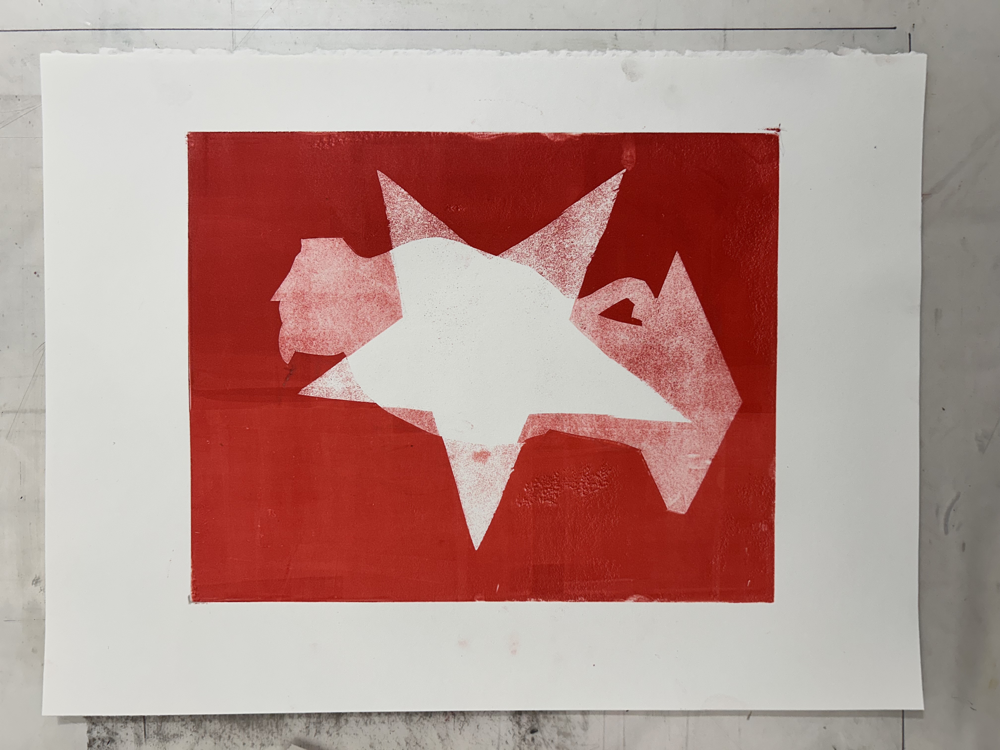
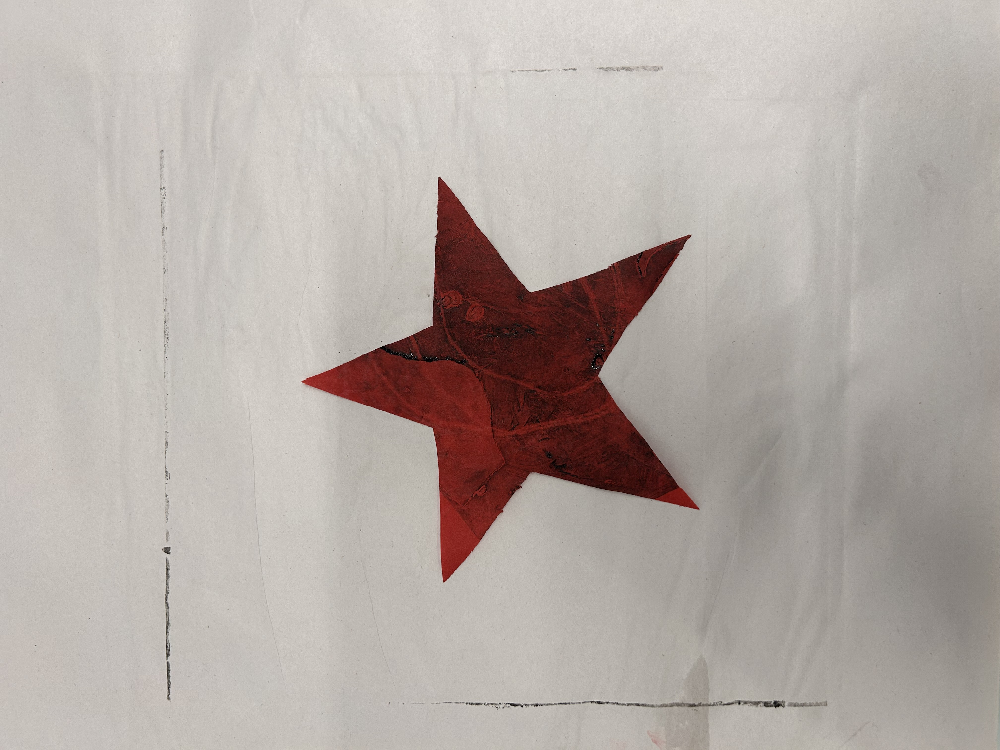
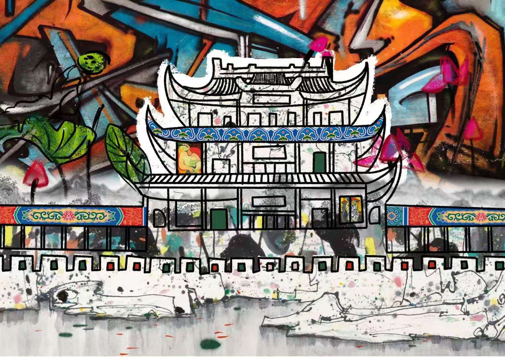
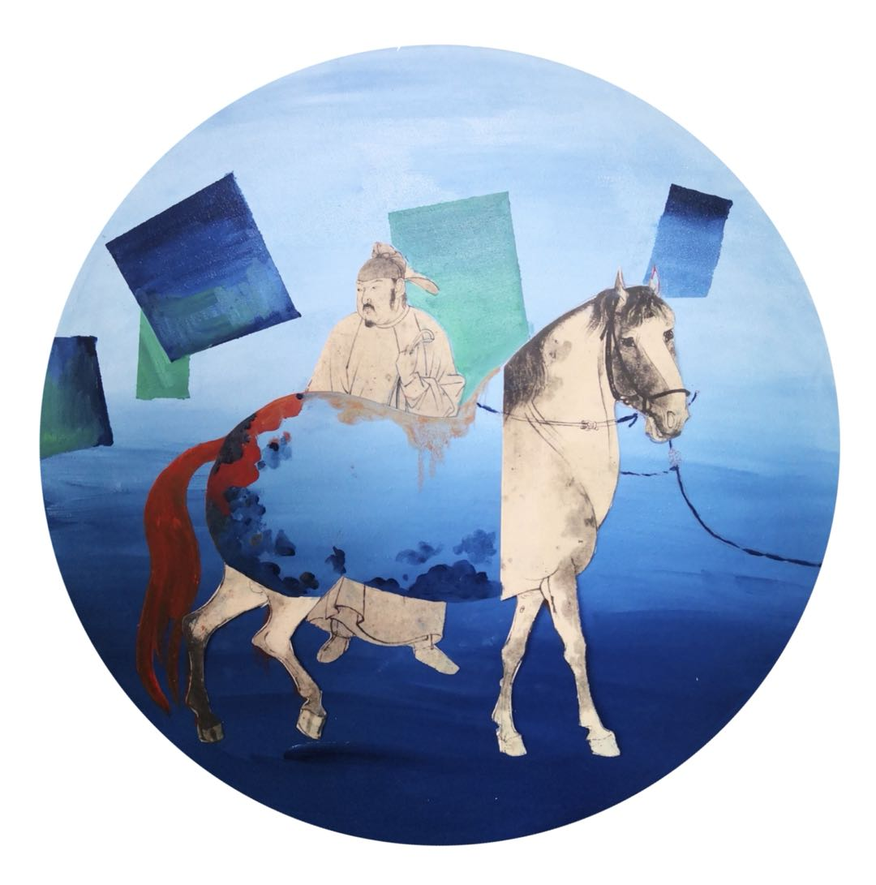
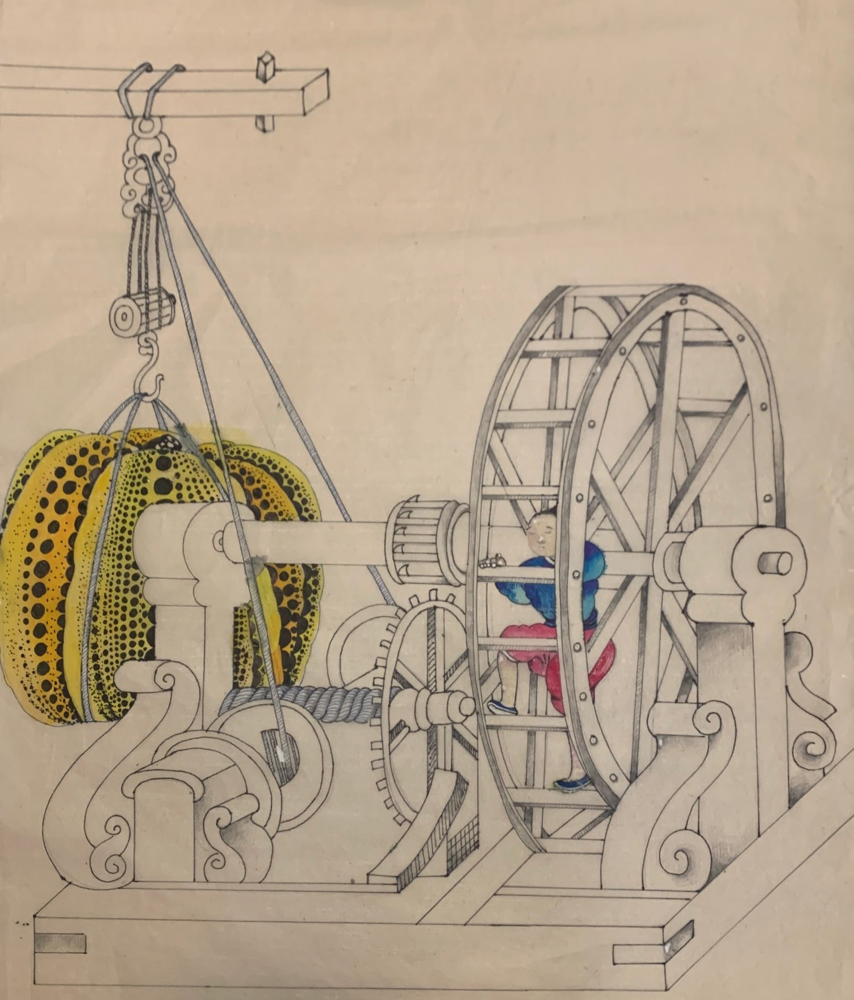

Where Am I? (2025.3)
Monotype Printing
Standing at the intersection of the past and the future, the West
and the Orient, I often think of where I truly belong to. Through
this monotype media I explored the complexity of my identity.

Star (2025.3)
Callograph Printing
A byproduct when creating another print. The texture was intricate
and beautiful.

The Gate (2024.6)
Ink Painting & Digital Art
Another work in my series Collision. The juxtaposition of the
Western Graffiti and the Chinese ink painting style creates a
unique visual impact. I combined cultural elements in thie work,
along with paying homage to many classical Western paintings such
as The Weeping Woman by Picasso.
This work won the Paint Through Boundary Art Competition at NYU,
and is now collected as a Mural Decoration in the NYU Liberal
Study Office!

Romantic (2023.1)
Digital Art on ProCreate
A mini profile picture I drew for my friend whithin 5 minutes. I
love how the outcome turned out to be natural and relax.

CyberPunk 2022 (2022.12)
Digital Art on ProCreate
A redesign of Animation Cyberpunk 2077: Edge Runners.
I allocated influencers from Dongbei, China into a Cyberpunk
setting. This bold exploration was viral on the internet, gaining
190k+ views on Bilibili.
You can watch the process
here .

Time Traveler (2022.1)
Chinese Ink Painting on Canvas
Another work in my series Collision. Through aligning mathematical
geometrics through the Chinese ink-painting-style horse from
《五马图》, I wish to explore a complex feeling when the modernity
meets past. I got inspiration from reading science fiction: Three
Body Problem by Cixin Liu.

Pumpkin Mechanics (2021.11)
Chinese Ink Painting on Canvas
I love combining unrelated elemnents into my artwork. This Pumpkin
Mechanics is an experiment I made with Chinese ancient mechanic
manual 《天工开物》 while paying homage to Yayoi Kusama's design.
